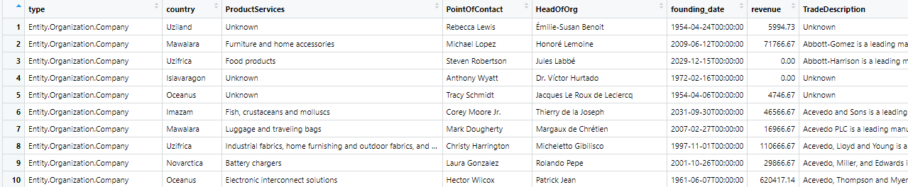
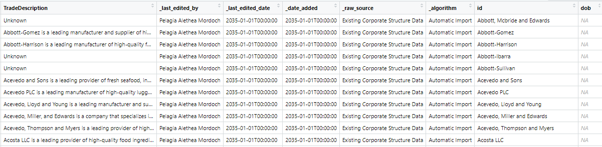
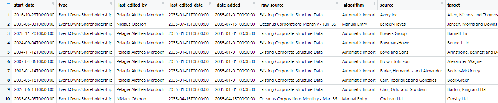
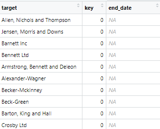
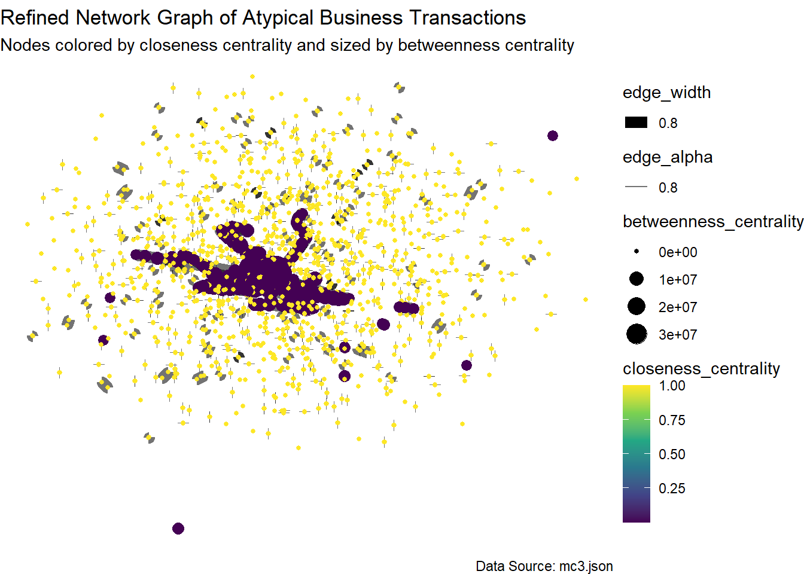

pacman::p_load(tidytext, readtext, quanteda, tidyverse, jsonlite, igraph, tidygraph, ggraph, visNetwork, clock, graphlayouts)Take-home Exercise 3 - Vast Challenge 2024
The Source
The task is taken from the VAST Challenge 2024. Questions from Mini Case 3: Temporal Analysis will be completed.
Challenge Overview


Welcome to Oceanus, an island nation with a healthy market for commercial fishing. Most companies in the region are united in following regulations and implementing sustainable fishing practices. But there are a few companies who are willing to cross ethical lines to increase their catch and their profits. Luckily, FishEye International maintains a watchful eye on fishing data. Their dedicated analysts have been processing data from various sources into a knowledge graph that they call CatchNet: the Oceanus Knowledge Graph.
The Task
Mini-challenge 3 concerns visualizing changes in business relationships within the commercial fishing industry. FishEye wants to understand how companies react to the closure of a competitor caught fishing illegally and how these changes affect influence networks. Design visualizations to show these changes over time and identify companies that may benefit from illegal fishing
Apply appropriate visual analytics methods to help FishEye, a non-profit organization that focuses on illegal fishing, to better identify bias, track behavior changes, and infer temporal patterns from the knowledge graphs prepared by their data analysts.
This take home exercise is done in conjunction with the group project. My group members are Keke and Quek You Ting.
Background
The business community in Oceanus is dynamic with new startups, mergers, acquisitions, and investments. FishEye International closely watches business records to keep tabs on commercial fishing operators. FishEye’s goal is to identify and prevent illegal fishing in the region’s sensitive marine ecosystem. Analysts are working with company records that show ownership, shareholders, transactions, and information about the typical products and services of each entity. FishEye’s analysts have a hybrid automated/manual process to transform the data into CatchNet: the Oceanus Knowledge Graph.
In the past year, Oceanus’s commercial fishing business community was rocked by the news that SouthSeafood Express Corp was caught fishing illegally. FishEye wants to understand temporal patterns and infer what may be happening in Oceanus’s fishing marketplace because of SouthSeafood Express Corp’s illegal behavior and eventual closure. The competitive nature of Oceanus’s fishing market may cause some businesses to react aggressively to capture SouthSeafood Express Corp’s business while other reactions may come from the awareness that illegal fishing does not go undetected and unpunished.
Tasks and Questions:
A key element in stopping illegal fishing is holding the people who own nefarious companies accountable. Thus, FishEye is keenly interested in developing visualization tools that work with CatchNet to identify the people who hold influence over business networks. That is especially difficult with varied and changing shareholder and ownership relationships.
FishEye analysts want to better visualize changes in corporate structures over time. Create a visual analytics approach that analysts can use to highlight temporal patterns and changes in corporate structures. Examine the most active people and businesses using visual analytics.
Using your visualizations, find and display examples of typical and atypical business transactions (e.g., mergers, acquisitions, etc.). Can you infer the motivations behind changes in their activity?
Develop a visual approach to examine inferences. Infer how the influence of a company changes through time. Can you infer ownership or influence that a network may have?
Identify the network associated with SouthSeafood Express Corp and visualize how this network and competing businesses change as a result of their illegal fishing behavior. Which companies benefited from SouthSeafood Express Corp legal troubles? Are there other suspicious transactions that may be related to illegal fishing? Provide visual evidence for your conclusions.
Note: the VAST challenge is focused on visual analytics and graphical figures should be included with your response to each question. Please include a reasonable number of figures for each question (no more than about 6) and keep written responses as brief as possible (around 250 words per question). Participants are encouraged to new visual representations rather than relying on traditional or existing approaches.
Reflection Questions
Which version of the data did you choose to work with and why? Did you download more than one version and change course during the challenge?
Given the task to develop visualizations for knowledge graphs, did you find that the challenge pushed you to develop new techniques for visual representation?
Did you participate in last year’s challenge? If so, did your experience last year help prepare you for this year’s challenge?
What was the most difficult part of working on this year’s data and what could have made it more accessible?
Getting Started
Installing and loading the required libraries
Note: Ensure that the pacman package has already been installed.
The following R packages will be used:
tidytext
tidyverse
readtext
quanteda
jsonlite
igraph
tidygraph
ggraph
visNetwork
Importing JSON File
Direct import of the mc3.json file shows an error message indicating that there’s an invalid character in the JSON text, specifically “NaN”. As “NaN” is not recognised as a valid value, preprocessing of the JSON file to replace “NaN” is required.
# Read the JSON file as text
json_text <- readLines("data/mc3.json")
# Replace "NaN" with "null"
json_text_fixed <- gsub("NaN", "null", json_text)
# Write the fixed JSON text back to a file
writeLines(json_text_fixed, "data/mc3_fixed.json")Importing preprocessed mc3_fixed.json file
mc3_data <- fromJSON("data/mc3_fixed.json")Check dataframe
Opens new tabs within R workspace, not shown in website
Example of the view is shown in the screenshot tab below
view(mc3_data[["nodes"]])
view(mc3_data[["links"]])mc3_data[[“nodes’]


mc3_data[[“links”]]


View dataframe
- Similar info as shown above
glimpse(mc3_data)List of 5
$ directed : logi TRUE
$ multigraph: logi TRUE
$ graph : Named list()
$ nodes :'data.frame': 60520 obs. of 15 variables:
..$ type : chr [1:60520] "Entity.Organization.Company" "Entity.Organization.Company" "Entity.Organization.Company" "Entity.Organization.Company" ...
..$ country : chr [1:60520] "Uziland" "Mawalara" "Uzifrica" "Islavaragon" ...
..$ ProductServices : chr [1:60520] "Unknown" "Furniture and home accessories" "Food products" "Unknown" ...
..$ PointOfContact : chr [1:60520] "Rebecca Lewis" "Michael Lopez" "Steven Robertson" "Anthony Wyatt" ...
..$ HeadOfOrg : chr [1:60520] "Émilie-Susan Benoit" "Honoré Lemoine" "Jules Labbé" "Dr. Víctor Hurtado" ...
..$ founding_date : chr [1:60520] "1954-04-24T00:00:00" "2009-06-12T00:00:00" "2029-12-15T00:00:00" "1972-02-16T00:00:00" ...
..$ revenue : num [1:60520] 5995 71767 0 0 4747 ...
..$ TradeDescription : chr [1:60520] "Unknown" "Abbott-Gomez is a leading manufacturer and supplier of high-quality furniture and home accessories, catering to"| __truncated__ "Abbott-Harrison is a leading manufacturer of high-quality food products, including baked goods, snacks, and bev"| __truncated__ "Unknown" ...
..$ _last_edited_by : chr [1:60520] "Pelagia Alethea Mordoch" "Pelagia Alethea Mordoch" "Pelagia Alethea Mordoch" "Pelagia Alethea Mordoch" ...
..$ _last_edited_date: chr [1:60520] "2035-01-01T00:00:00" "2035-01-01T00:00:00" "2035-01-01T00:00:00" "2035-01-01T00:00:00" ...
..$ _date_added : chr [1:60520] "2035-01-01T00:00:00" "2035-01-01T00:00:00" "2035-01-01T00:00:00" "2035-01-01T00:00:00" ...
..$ _raw_source : chr [1:60520] "Existing Corporate Structure Data" "Existing Corporate Structure Data" "Existing Corporate Structure Data" "Existing Corporate Structure Data" ...
..$ _algorithm : chr [1:60520] "Automatic Import" "Automatic Import" "Automatic Import" "Automatic Import" ...
..$ id : chr [1:60520] "Abbott, Mcbride and Edwards" "Abbott-Gomez" "Abbott-Harrison" "Abbott-Ibarra" ...
..$ dob : chr [1:60520] NA NA NA NA ...
$ links :'data.frame': 75817 obs. of 11 variables:
..$ start_date : chr [1:75817] "2016-10-29T00:00:00" "2035-06-03T00:00:00" "2028-11-20T00:00:00" "2024-09-04T00:00:00" ...
..$ type : chr [1:75817] "Event.Owns.Shareholdership" "Event.Owns.Shareholdership" "Event.Owns.Shareholdership" "Event.Owns.Shareholdership" ...
..$ _last_edited_by : chr [1:75817] "Pelagia Alethea Mordoch" "Niklaus Oberon" "Pelagia Alethea Mordoch" "Pelagia Alethea Mordoch" ...
..$ _last_edited_date: chr [1:75817] "2035-01-01T00:00:00" "2035-07-15T00:00:00" "2035-01-01T00:00:00" "2035-01-01T00:00:00" ...
..$ _date_added : chr [1:75817] "2035-01-01T00:00:00" "2035-07-15T00:00:00" "2035-01-01T00:00:00" "2035-01-01T00:00:00" ...
..$ _raw_source : chr [1:75817] "Existing Corporate Structure Data" "Oceanus Corporations Monthly - Jun '35" "Existing Corporate Structure Data" "Existing Corporate Structure Data" ...
..$ _algorithm : chr [1:75817] "Automatic Import" "Manual Entry" "Automatic Import" "Automatic Import" ...
..$ source : chr [1:75817] "Avery Inc" "Berger-Hayes" "Bowers Group" "Bowman-Howe" ...
..$ target : chr [1:75817] "Allen, Nichols and Thompson" "Jensen, Morris and Downs" "Barnett Inc" "Bennett Ltd" ...
..$ key : int [1:75817] 0 0 0 0 0 0 0 0 0 0 ...
..$ end_date : chr [1:75817] NA NA NA NA ...
Note
mc3_date[[“nodes”]] dataframe contains 15 columns and 60520 rows.
mc3_date[[“links”]] dataframe contains 11 columns and 75817 rows.
Note
On closer inspection of mc3_data, we note some issues to be rectified:
- Columns containing dates are treated as “Character” data type instead of date data type, which is incorrect. Thus, the data type of the following fields need to be changed to “Date”” data type:
- founding_date
- _last_edited_date
- _date_added
- start_date
- _last_edited_date
- _date_added
- dob
- Some columns have missing values, which need to be handled appropriately for ease of later analysis.
- Some columns are prefixed with “_”, we remove them to reduce chance of bugs later
Missing Values
Identify the percentage of missing values within the dataset
# Function to calculate missing value percentages
calculate_missing_percentage <- function(df) {
total_values <- nrow(df) * ncol(df)
missing_values <- sum(is.na(df))
missing_percentage <- (missing_values / total_values) * 100
return(missing_percentage)
}nodes_missing_percentage <- calculate_missing_percentage(mc3_data[["nodes"]])
nodes_missing_percentage[1] 35.11952nodes_missing_by_column <- sapply(mc3_data[["nodes"]], function(x) sum(is.na(x)) / length(x) * 100)
nodes_missing_by_column type country ProductServices PointOfContact
0.00000 0.00000 85.34204 85.38334
HeadOfOrg founding_date revenue TradeDescription
85.35691 85.34204 85.36847 85.34204
_last_edited_by _last_edited_date _date_added _raw_source
0.00000 0.00000 0.00000 0.00000
_algorithm id dob
0.00000 0.00000 14.65796 links_missing_percentage <- calculate_missing_percentage(mc3_data[["links"]])
links_missing_percentage[1] 9.059973links_missing_by_column <- sapply(mc3_data[["links"]], function(x) sum(is.na(x)) / length(x) * 100)
links_missing_by_column start_date type _last_edited_by _last_edited_date
0.1187069 0.0000000 0.0000000 0.0000000
_date_added _raw_source _algorithm source
0.0000000 0.0000000 0.0000000 0.0000000
target key end_date
0.0000000 0.0000000 99.5410000
Note
Nodes: Overall, there are 35.12% missing values. While most columns have no missing values, the majority of those with missing data pertain to optional attributes:
ProductServices (Optional) - 85.34%
PointOfContact (Optional)- 85.38%
HeadofOrg (Optional) - 85.36%
founding_date - 85.34%
revenue (Optional) - 85.37%
TradeDescription (Optional) - 85.34%
dob - 14.66%
Links: Overall, there are 9.06% missing values. Most of the columns do not contain missing values, except for:
start_date - 0.12%
end_date (Optional) - 99.54%
In addition, according to the VAST2024 - MC3 Data Description file, all empty values are supposed to have been set to 0. However, there are still some values with “NA”.
Setting empty values in revenue to 0
# Create a copy of mc3_data
mc3_data2 <- mc3_data
# Set empty values in revenue to 0 and save it to the new list
mc3_data2$nodes$revenue <- ifelse(is.na(mc3_data2$nodes$revenue) | mc3_data2$nodes$revenue == "", 0, mc3_data2$nodes$revenue)Verify changes
# ensure no more missing values in revenue column
sum(is.na(mc3_data2$nodes$revenue))[1] 0Drop unnecessary columns
A decision was made to drop the end_date column due to the sheer number of missing values:
# Create a copy of mc3_data2
mc3_data3 <- mc3_data2
mc3_data3$links <- subset(mc3_data3$links, select = -end_date)Verify changes
colnames(mc3_data3$links) [1] "start_date" "type" "_last_edited_by"
[4] "_last_edited_date" "_date_added" "_raw_source"
[7] "_algorithm" "source" "target"
[10] "key" view(mc3_data3[["nodes"]])
view(mc3_data3[["links"]])Rename Columns
Remove prefix “_” from columns to reduce chance of issues later
# Function to remove leading underscores from column names
remove_leading_underscores <- function(df) {
colnames(df) <- gsub("^_", "", colnames(df))
return(df)
}
# Create a copy of mc3_data and name it mc3_data3
mc3_data4 <- mc3_data3
# Apply the function to the nodes and links data frames in mc3_data3
mc3_data4$nodes <- remove_leading_underscores(mc3_data4$nodes)
mc3_data4$links <- remove_leading_underscores(mc3_data4$links)
# Verify the changes in mc3_data4
colnames(mc3_data4$nodes) [1] "type" "country" "ProductServices" "PointOfContact"
[5] "HeadOfOrg" "founding_date" "revenue" "TradeDescription"
[9] "last_edited_by" "last_edited_date" "date_added" "raw_source"
[13] "algorithm" "id" "dob" colnames(mc3_data4$links) [1] "start_date" "type" "last_edited_by" "last_edited_date"
[5] "date_added" "raw_source" "algorithm" "source"
[9] "target" "key" Constructing Network Graph
Modifying network nodes and edges
Prepare the edges dataframe for network analysis by:
Ensuring all edges are unique.
Converting columns to a uniform type.
Calculating the weight of each edge (how many times each connection occurs).
Removing any self-loops.
mc3_edges <-
as_tibble(mc3_data4$links) %>%
distinct() %>%
mutate(source = as.character(source),
target = as.character(target),
type = as.character(type)) %>%
group_by(source, target, type) %>%
summarise(weights = n()) %>%
filter(source != target) %>%
ungroup()
Note
The resulting mc3_edges tibble contains the columns source, target, type, and weights, where each row represents a unique edge between two nodes with a specific type, and the weights column represents the number of times that edge occurs.
Clean and preprocess the nodes data by:
Ensuring that each column has the correct data type for analysis.
Selecting only the necessary columns for further analysis or visualization.
mc3_nodes <- as_tibble(mc3_data4$nodes) %>%
mutate(country = as.character(country),
id = as.character(id),
ProductServices = as.character(ProductServices),
revenue = as.numeric(as.character(revenue)),
type = as.character(type)) %>%
select(id, country, type, revenue, ProductServices)
Note
The resulting mc3_nodes tibble contains the cleaned and correctly typed columns id, country, type, revenue, and ProductServices.
Keeping unique values
Edges
unique_transaction_types_edges <- mc3_edges %>%
select(type) %>%
distinct()
# Display the unique transaction types
print(unique_transaction_types_edges)# A tibble: 4 × 1
type
<chr>
1 Event.Owns.Shareholdership
2 Event.WorksFor
3 Event.Owns.BeneficialOwnership
4 Relationship.FamilyRelationship
Note
There are 4 types of edges, namely:
Event.Owns.Shareholdership
Event.WOrksFor
Event.Owns.BeneficialOwnership
Relationship.FamilyRelationship
Nodes
unique_transaction_types_nodes <- mc3_nodes %>%
select(type) %>%
distinct()
# Display the unique transaction types
print(unique_transaction_types_nodes)# A tibble: 8 × 1
type
<chr>
1 Entity.Organization.Company
2 Entity.Organization.LogisticsCompany
3 Entity.Organization.FishingCompany
4 Entity.Organization.FinancialCompany
5 Entity.Organization.NewsCompany
6 Entity.Organization.NGO
7 Entity.Person
8 Entity.Person.CEO
Note
There are 8 types of nodes, namely:
Entity.Organization.Company
Entity.Organization.LogisticsCompany
Entity.Organization.FishingCompany
Entity.Organization.FinancialCompany
Entity.Organization.NewsCompany
Entity.Organization.NGO
Entity.Person
Entity.Person.CEO
Extract all the source and target nodes
Drop any unmatched nodes
id1 <- mc3_edges %>%
select(source) %>%
rename(id = source)
id2 <- mc3_edges %>%
select(target) %>%
rename(id = target)
mc3_nodes1 <- rbind(id1, id2) %>%
distinct() %>%
left_join(mc3_nodes, by = c("id" = "id")) %>%
mutate(unmatched = "drop")Verify results
print(mc3_nodes1)# A tibble: 60,520 × 6
id country type revenue ProductServices unmatched
<chr> <chr> <chr> <dbl> <chr> <chr>
1 4. SeaCargo Ges.m.b.H. Oceanus Entity.… 23304. Tuna, sword fi… drop
2 9. RiverLine CJSC Oceanus Entity.… 50134. Unknown drop
3 Aaron Acosta Mawalara Entity.… 0 <NA> drop
4 Aaron Allen Galduzim Entity.… 0 <NA> drop
5 Aaron Austin Kethilim Entity.… 0 <NA> drop
6 Aaron Baker Azurionix Entity.… 0 <NA> drop
7 Aaron Barry Kondanovia Entity.… 0 <NA> drop
8 Aaron Bauer Rio Solovia Entity.… 0 <NA> drop
9 Aaron Bishop Osterivaro Entity.… 0 <NA> drop
10 Aaron Bolton n.a. Entity.… 0 <NA> drop
# ℹ 60,510 more rowsPlot graph
mc3_graph <- tbl_graph(nodes = mc3_nodes1, edges = mc3_edges, directed = FALSE) %>%
mutate(betweenness_centrality = centrality_betweenness(),
closeness_centrality = centrality_closeness())
theme_graph()List of 136
$ line :List of 6
..$ colour : chr "black"
..$ linewidth : num 0.5
..$ linetype : num 1
..$ lineend : chr "butt"
..$ arrow : logi FALSE
..$ inherit.blank: logi TRUE
..- attr(*, "class")= chr [1:2] "element_line" "element"
$ rect :List of 5
..$ fill : chr "white"
..$ colour : chr "black"
..$ linewidth : num 0.5
..$ linetype : num 1
..$ inherit.blank: logi TRUE
..- attr(*, "class")= chr [1:2] "element_rect" "element"
$ text :List of 11
..$ family : chr "Arial Narrow"
..$ face : chr "plain"
..$ colour : chr "black"
..$ size : num 11
..$ hjust : num 0.5
..$ vjust : num 0.5
..$ angle : num 0
..$ lineheight : num 0.9
..$ margin : 'margin' num [1:4] 0points 0points 0points 0points
.. ..- attr(*, "unit")= int 8
..$ debug : logi FALSE
..$ inherit.blank: logi FALSE
..- attr(*, "class")= chr [1:2] "element_text" "element"
$ title : NULL
$ aspect.ratio : NULL
$ axis.title : list()
..- attr(*, "class")= chr [1:2] "element_blank" "element"
$ axis.title.x :List of 11
..$ family : NULL
..$ face : NULL
..$ colour : NULL
..$ size : NULL
..$ hjust : NULL
..$ vjust : num 1
..$ angle : NULL
..$ lineheight : NULL
..$ margin : 'margin' num [1:4] 2.75points 0points 0points 0points
.. ..- attr(*, "unit")= int 8
..$ debug : NULL
..$ inherit.blank: logi TRUE
..- attr(*, "class")= chr [1:2] "element_text" "element"
$ axis.title.x.top :List of 11
..$ family : NULL
..$ face : NULL
..$ colour : NULL
..$ size : NULL
..$ hjust : NULL
..$ vjust : num 0
..$ angle : NULL
..$ lineheight : NULL
..$ margin : 'margin' num [1:4] 0points 0points 2.75points 0points
.. ..- attr(*, "unit")= int 8
..$ debug : NULL
..$ inherit.blank: logi TRUE
..- attr(*, "class")= chr [1:2] "element_text" "element"
$ axis.title.x.bottom : NULL
$ axis.title.y :List of 11
..$ family : NULL
..$ face : NULL
..$ colour : NULL
..$ size : NULL
..$ hjust : NULL
..$ vjust : num 1
..$ angle : num 90
..$ lineheight : NULL
..$ margin : 'margin' num [1:4] 0points 2.75points 0points 0points
.. ..- attr(*, "unit")= int 8
..$ debug : NULL
..$ inherit.blank: logi TRUE
..- attr(*, "class")= chr [1:2] "element_text" "element"
$ axis.title.y.left : NULL
$ axis.title.y.right :List of 11
..$ family : NULL
..$ face : NULL
..$ colour : NULL
..$ size : NULL
..$ hjust : NULL
..$ vjust : num 1
..$ angle : num -90
..$ lineheight : NULL
..$ margin : 'margin' num [1:4] 0points 0points 0points 2.75points
.. ..- attr(*, "unit")= int 8
..$ debug : NULL
..$ inherit.blank: logi TRUE
..- attr(*, "class")= chr [1:2] "element_text" "element"
$ axis.text : list()
..- attr(*, "class")= chr [1:2] "element_blank" "element"
$ axis.text.x :List of 11
..$ family : NULL
..$ face : NULL
..$ colour : NULL
..$ size : NULL
..$ hjust : NULL
..$ vjust : num 1
..$ angle : NULL
..$ lineheight : NULL
..$ margin : 'margin' num [1:4] 2.2points 0points 0points 0points
.. ..- attr(*, "unit")= int 8
..$ debug : NULL
..$ inherit.blank: logi TRUE
..- attr(*, "class")= chr [1:2] "element_text" "element"
$ axis.text.x.top :List of 11
..$ family : NULL
..$ face : NULL
..$ colour : NULL
..$ size : NULL
..$ hjust : NULL
..$ vjust : num 0
..$ angle : NULL
..$ lineheight : NULL
..$ margin : 'margin' num [1:4] 0points 0points 2.2points 0points
.. ..- attr(*, "unit")= int 8
..$ debug : NULL
..$ inherit.blank: logi TRUE
..- attr(*, "class")= chr [1:2] "element_text" "element"
$ axis.text.x.bottom : NULL
$ axis.text.y :List of 11
..$ family : NULL
..$ face : NULL
..$ colour : NULL
..$ size : NULL
..$ hjust : num 1
..$ vjust : NULL
..$ angle : NULL
..$ lineheight : NULL
..$ margin : 'margin' num [1:4] 0points 2.2points 0points 0points
.. ..- attr(*, "unit")= int 8
..$ debug : NULL
..$ inherit.blank: logi TRUE
..- attr(*, "class")= chr [1:2] "element_text" "element"
$ axis.text.y.left : NULL
$ axis.text.y.right :List of 11
..$ family : NULL
..$ face : NULL
..$ colour : NULL
..$ size : NULL
..$ hjust : num 0
..$ vjust : NULL
..$ angle : NULL
..$ lineheight : NULL
..$ margin : 'margin' num [1:4] 0points 0points 0points 2.2points
.. ..- attr(*, "unit")= int 8
..$ debug : NULL
..$ inherit.blank: logi TRUE
..- attr(*, "class")= chr [1:2] "element_text" "element"
$ axis.text.theta : NULL
$ axis.text.r :List of 11
..$ family : NULL
..$ face : NULL
..$ colour : NULL
..$ size : NULL
..$ hjust : num 0.5
..$ vjust : NULL
..$ angle : NULL
..$ lineheight : NULL
..$ margin : 'margin' num [1:4] 0points 2.2points 0points 2.2points
.. ..- attr(*, "unit")= int 8
..$ debug : NULL
..$ inherit.blank: logi TRUE
..- attr(*, "class")= chr [1:2] "element_text" "element"
$ axis.ticks : list()
..- attr(*, "class")= chr [1:2] "element_blank" "element"
$ axis.ticks.x : NULL
$ axis.ticks.x.top : NULL
$ axis.ticks.x.bottom : NULL
$ axis.ticks.y : NULL
$ axis.ticks.y.left : NULL
$ axis.ticks.y.right : NULL
$ axis.ticks.theta : NULL
$ axis.ticks.r : NULL
$ axis.minor.ticks.x.top : NULL
$ axis.minor.ticks.x.bottom : NULL
$ axis.minor.ticks.y.left : NULL
$ axis.minor.ticks.y.right : NULL
$ axis.minor.ticks.theta : NULL
$ axis.minor.ticks.r : NULL
$ axis.ticks.length : 'simpleUnit' num 2.75points
..- attr(*, "unit")= int 8
$ axis.ticks.length.x : NULL
$ axis.ticks.length.x.top : NULL
$ axis.ticks.length.x.bottom : NULL
$ axis.ticks.length.y : NULL
$ axis.ticks.length.y.left : NULL
$ axis.ticks.length.y.right : NULL
$ axis.ticks.length.theta : NULL
$ axis.ticks.length.r : NULL
$ axis.minor.ticks.length : 'rel' num 0.75
$ axis.minor.ticks.length.x : NULL
$ axis.minor.ticks.length.x.top : NULL
$ axis.minor.ticks.length.x.bottom: NULL
$ axis.minor.ticks.length.y : NULL
$ axis.minor.ticks.length.y.left : NULL
$ axis.minor.ticks.length.y.right : NULL
$ axis.minor.ticks.length.theta : NULL
$ axis.minor.ticks.length.r : NULL
$ axis.line : list()
..- attr(*, "class")= chr [1:2] "element_blank" "element"
$ axis.line.x : NULL
$ axis.line.x.top : NULL
$ axis.line.x.bottom : NULL
$ axis.line.y : NULL
$ axis.line.y.left : NULL
$ axis.line.y.right : NULL
$ axis.line.theta : NULL
$ axis.line.r : NULL
$ legend.background : list()
..- attr(*, "class")= chr [1:2] "element_blank" "element"
$ legend.margin : 'margin' num [1:4] 5.5points 5.5points 5.5points 5.5points
..- attr(*, "unit")= int 8
$ legend.spacing : 'simpleUnit' num 11points
..- attr(*, "unit")= int 8
$ legend.spacing.x : NULL
$ legend.spacing.y : NULL
$ legend.key : list()
..- attr(*, "class")= chr [1:2] "element_blank" "element"
$ legend.key.size : 'simpleUnit' num 1.2lines
..- attr(*, "unit")= int 3
$ legend.key.height : NULL
$ legend.key.width : NULL
$ legend.key.spacing : 'simpleUnit' num 5.5points
..- attr(*, "unit")= int 8
$ legend.key.spacing.x : NULL
$ legend.key.spacing.y : NULL
$ legend.frame : NULL
$ legend.ticks : NULL
$ legend.ticks.length : 'rel' num 0.2
$ legend.axis.line : NULL
$ legend.text :List of 11
..$ family : NULL
..$ face : NULL
..$ colour : NULL
..$ size : 'rel' num 0.8
..$ hjust : NULL
..$ vjust : NULL
..$ angle : NULL
..$ lineheight : NULL
..$ margin : NULL
..$ debug : NULL
..$ inherit.blank: logi TRUE
..- attr(*, "class")= chr [1:2] "element_text" "element"
$ legend.text.position : NULL
$ legend.title :List of 11
..$ family : NULL
..$ face : NULL
..$ colour : NULL
..$ size : NULL
..$ hjust : num 0
..$ vjust : NULL
..$ angle : NULL
..$ lineheight : NULL
..$ margin : NULL
..$ debug : NULL
..$ inherit.blank: logi TRUE
..- attr(*, "class")= chr [1:2] "element_text" "element"
$ legend.title.position : NULL
$ legend.position : chr "right"
$ legend.position.inside : NULL
$ legend.direction : NULL
$ legend.byrow : NULL
$ legend.justification : chr "center"
$ legend.justification.top : NULL
$ legend.justification.bottom : NULL
$ legend.justification.left : NULL
$ legend.justification.right : NULL
$ legend.justification.inside : NULL
$ legend.location : NULL
$ legend.box : NULL
$ legend.box.just : NULL
$ legend.box.margin : 'margin' num [1:4] 0cm 0cm 0cm 0cm
..- attr(*, "unit")= int 1
$ legend.box.background : list()
..- attr(*, "class")= chr [1:2] "element_blank" "element"
$ legend.box.spacing : 'simpleUnit' num 11points
..- attr(*, "unit")= int 8
[list output truncated]
- attr(*, "class")= chr [1:2] "theme" "gg"
- attr(*, "complete")= logi TRUE
- attr(*, "validate")= logi TRUETop Nodes
# Identify top nodes by betweenness centrality
top_nodes <- mc3_graph %>%
as_tibble() %>%
filter(betweenness_centrality >= 3000000)Graph Visualisation
Filter for Atypical Business Transactions

# Filter edges for atypical business transactions
atypical_edges <- mc3_edges %>%
filter(type %in% c("Event.Owns.Shareholdership", "Event.WorksFor", "Event.Owns.BeneficialOwnership"))
# Extract nodes that are part of these transactions
atypical_nodes <- mc3_nodes %>%
filter(id %in% unique(c(atypical_edges$source, atypical_edges$target)))
# Create the graph object with filtered data
atypical_graph <- tbl_graph(nodes = atypical_nodes, edges = atypical_edges, directed = FALSE) %>%
mutate(betweenness_centrality = centrality_betweenness(),
closeness_centrality = centrality_closeness())
# Define higher centrality thresholds for more filtering
betweenness_threshold <- quantile(atypical_graph %>% activate(nodes) %>% pull(betweenness_centrality), 0.995)
closeness_threshold <- quantile(atypical_graph %>% activate(nodes) %>% pull(closeness_centrality), 0.995)
# Filter nodes based on higher centrality thresholds
filtered_graph <- atypical_graph %>%
activate(nodes) %>%
filter(betweenness_centrality >= betweenness_threshold | closeness_centrality >= closeness_threshold) %>%
activate(edges) %>%
filter(edge_is_between())
# Display the refined network graph
ggraph(filtered_graph, layout = "fr") + # Using Fruchterman-Reingold layout
geom_edge_link(aes(edge_alpha = 0.8, edge_width = 0.8)) + # Customize edge appearance
geom_node_point(aes(size = betweenness_centrality, color = closeness_centrality)) + # Customize node appearance
scale_color_viridis_c() + # Use viridis color scale
theme_void() + # Use a void theme
labs(title = "Refined Network Graph of Atypical Business Transactions",
subtitle = "Nodes colored by closeness centrality and sized by betweenness centrality",
caption = "Data Source: mc3.json") # Add titles and captions